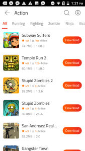

9Apps 用了快一年，从下载到安装的那些细节变化
从最初被下载速度吸引到现在每天点开看看，9Apps 这款轻量级应用商店在长期使用中显出了它的底色——快是真快，但本地化和推荐逻辑也渐渐露出了局限。
装9Apps官网到现在刚好十个月。当初是为了找一个 Google Play 上没有的冷门工具，搜来搜去最终在它上面找到了下载链接。那时候对它没什么概念，印象里就是个"第三方应用市场"，带着点"试试看"的心态装的——毕竟安装包才 3.4 MB，大不了卸了也不心疼。
十个月过去，它没被卸掉，反而成了我手机里常驻的那几个应用之一。不是说它有多么不可替代，而是在一些特定场景下，它确实比官方商店顺手得多。长期用下来，有些东西从惊喜变成了习惯，有些东西从不在意变成了吐槽，还有些当初没意识到的细节，现在反成了最依赖的部分。
从别扭到习惯：那些越用越顺手的地方
刚装的时候对 9Apps 的界面没什么感觉——图标是绿色的，首页排版算不上精致，跟 Google Play 的 Material Design 比起来显得有点朴素。但用多了之后发现，这种朴素反而成了优势。首页就是搜索框 + 分类 + 推荐区，没有花哨的动画和横幅广告，想找什么直接搜或者点分类就行，操作路径很短。

真正让我从"试试看"变成"常用"的，是下载速度。第一次在 9Apps 上下载一个 60 MB 的 UC Browser，用的是 10 Mbps 的移动数据，结果 12 秒就下完了——同款应用在 Google Play 上用了 45 秒。当时以为是偶然，后来接连试了几个，基本都能快个 3 到 5 倍。现在我知道这是多连接并发下载的功劳，但当时第一反应是"这玩意儿怎么这么快"。
速度快之外，断点续传这个功能在弱网环境下简直救命。地铁里信号时有时无，下载到一半断了，重新点下载直接从上次的位置接着走，不用从头再来。这个细节在官方商店里不是没有，但 9Apps 的实现更彻底——多连接里某一条断了不影响其他，进度实时存本地，重启应用也不会丢。
还有一个慢慢养成的习惯：看安全标记。一开始下载应用只看评分和下载量，后来有一次下了个没标"Verified Safe"的应用，装上之后手机开始弹广告。从那以后，详情页上那几个小标签（Verified Safe、Original APK、VirusTotal Scan）成了每次必看的。后来翻了9Apps文档才明白，它对上架应用的安全扫描比我最初以为的要认真，虽然肯定有漏网之鱼，但至少给了用户一个筛选依据。
从不在意到吐槽：那些越用越烦的地方
说到筛选依据，就不得不提 9Apps 最让我头疼的一个问题——推荐逻辑。9Apps 在生活方式类应用上做得很本地化，但这个"本地化"对我来说是错位的。它的内容运营明显偏向印度市场，首页推荐的 Paytm、Ola、Swiggy 这些应用，我装了也用不了。每次打开首页，刷出来的前十几个应用里，真正对我有用的可能只有两三个。
我试过在设置里调地区，调完之后推荐确实会变，但新的推荐又变成了印尼或者中东市场的应用——合着它的"本地化"就是在几个新兴市场之间切换，而不是真的根据我的使用习惯来。现在我的做法是直接跳过首页，打开就点搜索框，搜完就走，推荐区基本当不存在。
另一个烦人的点是后台保活。9Apps 的下载引擎很积极，下载完一个应用之后还会悄悄在后台继续下一个推荐应用的安装包。刚开始以为是误触，后来发现它有个"自动下载推荐"的开关，默认是开着的。关掉之后好了，但这种默认开启的行为让人有点不爽——我让你帮我下 A，你自己决定帮我下 B，算怎么回事。
还有权限的问题。Android 10 之后分区存储限制越来越严，9Apps 下载的 APK 文件默认存在它自己的私有目录里，系统文件管理器看不到。有时候想把下载好的安装包传到电脑上，得先在 9Apps 内部打开文件位置，再用第三方管理器拷贝出来，步骤比以前繁琐。这不是 9Apps 一家的问题，是 Android 系统本身的限制，但用了这么久还是觉得别扭。
离不开的功能和再也没碰过的功能
如果让我选一个现在每天离不开的功能，那就是下载管理器。它的并发下载、断点续传、下载历史管理做得确实好用。有时候同时下载三四个应用，进度条各自独立显示，哪个完了哪个继续，完全不用担心互相干扰。下载完的历史记录会自动分类哪些已经安装、哪些还没装，清理起来也方便。
反过来说，有个功能我自从装完就再也没碰过——锁屏推荐。9Apps 会在锁屏上推送推荐应用，号称是"根据你的使用习惯精准推荐"。但从我解锁手机到打开目标应用通常只需要几秒钟，锁屏推荐根本来不及看，就算看了也没兴趣。每次想关掉这个功能，都要进好几层设置，嫌麻烦也就算了，但这功能放在我这里纯属摆设。

长期使用后的观感修正
十个月前我对 9Apps 的印象是"一个可能不太正规的第三方应用市场"，现在这个判断变了。它确实不是 Google Play 或者 App Store 那种官方商店的定位，走的是新兴市场本地化路线，但安全扫描做得比我预想的要到位，下载速度的优势也不是吹出来的。用了这么久没出过什么安全问题，这一点在我看来很重要。
但我也高估了它的推荐能力。当初以为它"本地化"意味着更懂我，后来才明白它的本地化是有明确市场边界的——印度、印尼、中东、俄罗斯、巴西，这些是它重点运营的地区，其他地区的用户基本就是"能用但体验打折"。对国内用户来说，它更像一个"找冷门应用的备用下载渠道"，而不是主力应用商店。
还有一个低估的点是它的资源占用。安装包 3.4 MB，运行时 RAM 占用只有 30-50 MB，这个数字放在 2024 年的安卓应用里简直是一股清流。很多应用动不动就上百 MB，9Apps 这点体积真的没什么负担，装了也不会影响手机性能。
去留结论
会不会卸载 9Apps？短期内不会。它在我的手机里定位很明确——一个轻量级的备用下载渠道，主力还是官方商店。遇到官方商店找不到的应用、或者下载速度太慢的时候，就打开 9Apps 搜一下。它不会成为我每天必用的应用，但也没到要删掉的地步。
什么信号出现我会考虑换掉它？如果哪一天它的安全扫描开始放水、出现了我中招的恶意应用，或者下载速度被其他应用市场超越，那就是说再见的时候了。但以目前的状态看，它还能在我的手机里待很久。
说到底，9Apps 是那种"没有惊艳但也不让人闹心"的应用。下载速度够快，体积够小，安全标记够清楚——这三点做到了，对我来说就够了。推荐不准、锁屏没用这些问题，忍忍也就过去了。毕竟，一个备用工具，好用就行，要求那么多干嘛。
关于这套资料的维护，说起来它覆盖的应用种类不少，从生活工具到游戏都有，如果你对上面提到的某个功能点还想深挖，不妨去GitHub、Gitee或者GitCode上翻翻看——三个平台都同步了完整内容，按需查阅就行。